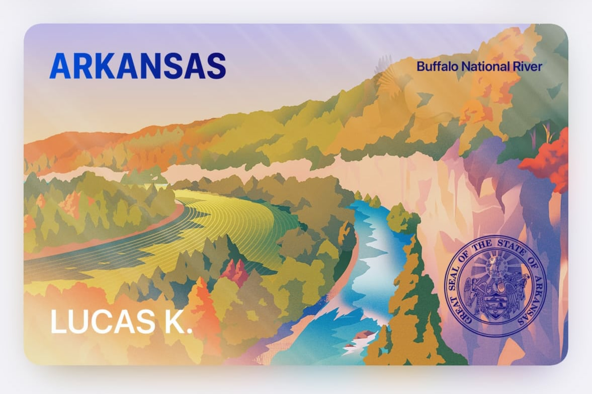
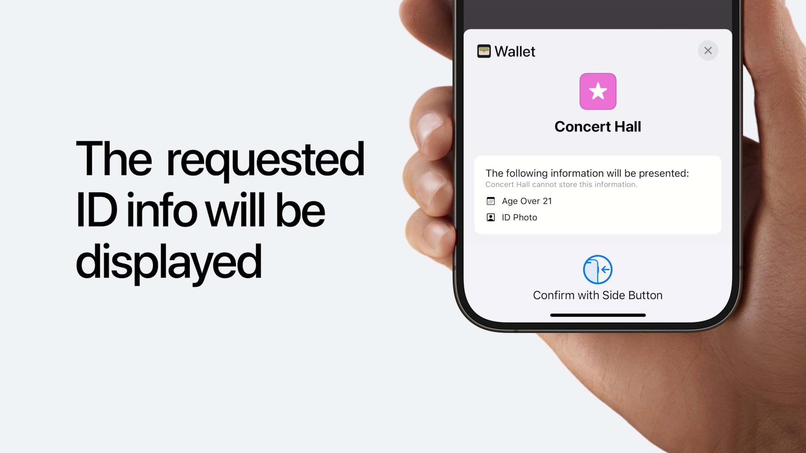

Arkansas added mobile IDs in Apple Wallet this week. I figured they'd be one of the last states to do it, especially after they'd rolled out their own, bespoke mobile ID app,1 2 but I'm glad to see otherwise. I'm a big fan of the Buffalo River design and I think Apple's doing a solid job so far with a cohesive collection of state IDs that still have their own identity.3 I still haven't seen anyone besides TSA accepting it yet, but allegedly the University of Arkansas will be accepting them this fall at Razorback games for alcohol.

The design changes when the phone tilts. Hover/tap to see the change
I think it'll be a while before it's not only possible to use this when getting pulled over, but also normal to do so (who wants to be first person to try a "cool thing on their phone" during a traffic stop?). Aside from TSA, I think the next place that mobile IDs see wide adoption are the bars/restaurants/venues, not as a replacement for physical IDs, but as an additional option. The local news interviewed the owner of Pinpoint, an excellent pinball bar in Fayetteville, who is hesitant about digital fakes, noting that he faces a $1,000 fine for each underage person in his bar. Maybe some ambitious computer science undergrads will prove me wrong, but I figure that the digital ID system is more resistant to fake IDs than to physical IDs. Since the state validates the authenticity of the ID, when the bouncer gets your photo and age status from your phone, in theory they can trust it's a legitimate ID (and just have to focus on matching the picture to the person). Normalized digital IDs at bars would have adverse effects on underage drinking and college bar culture,4 but as a silver lining, potentially reduce people like me getting grilled by bouncers for daring to go to a bar outside of Arkansas.5

While the in-person validation seems to be tent pole feature of the digital IDs, I actually wonder if it's also a long con play to counter some of the online ID verification sweeping the country. In Arkansas, it started with requiring ID for adult content, then was followed by an attempt for social media age verification which was struck down.6 Other states are passing laws to force the operating system to collect a user's age, so apps and websites see if a user falls in an "age bracket", but this doesn't require state ID validation. (But I'm sure that will follow).
For the record, I'm against online ID verification in almost all forms (I can see the utility in some instances, like giving a government website your government ID), especially when the status quo relies upon shady third parties that allegedly are already sharing the data they collect with data brokers and credit card companies, which is significantly worse than the status quo in the physical world.7
However, they're laying the groundwork for online age verification without third parties (Digital Credentials API: Apple, Chrome, W3). A process that just involves my phone sharing an attestation that I'm above a target age is immensely more tolerable than giving my ID and face scan to some unknown entity and trusting they'll be responsible with it. I'd figure that eventually we'd get to a point where the process is analogous to the Apple Pay buttons on the web already (e.g. click an "Authenticate with Wallet" button, confirm what's being shared and authenticate with a system dialog, and then move on), which would be much smoother than any third party company's process.
I'm optimistic that if the time comes where there's significant pressure on operating system vendors or websites to provide age checks, that this system is feasible enough to deploy widely, before some existing third-party age verification company gets enough of a foothold to lobby themselves into the "preferred" solution of governments.
Again, I'd really prefer the internet to stay open and relatively barrier-free, but I'd much prefer the privacy-preserving methods of local attestation and limited data sharing over the status quo of "upload your ID and trust".
I've loaded both my Arkansas driver's license and the Digital ID based on my passport into my wallet. I don't intend to use them any time soon, barring losing my wallet on a trip8, but I'll be curious to see where the technology goes.